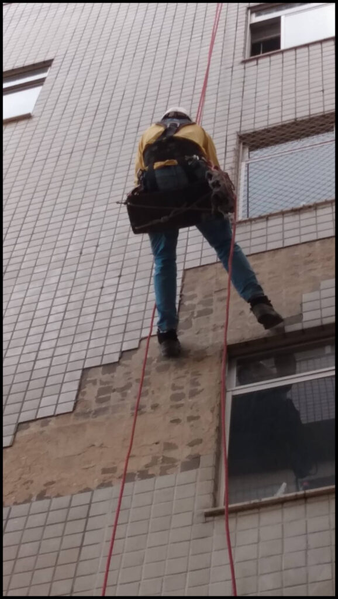
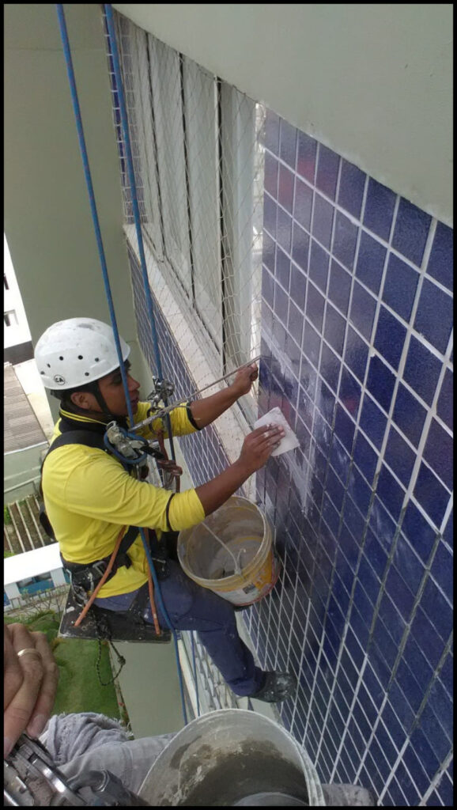
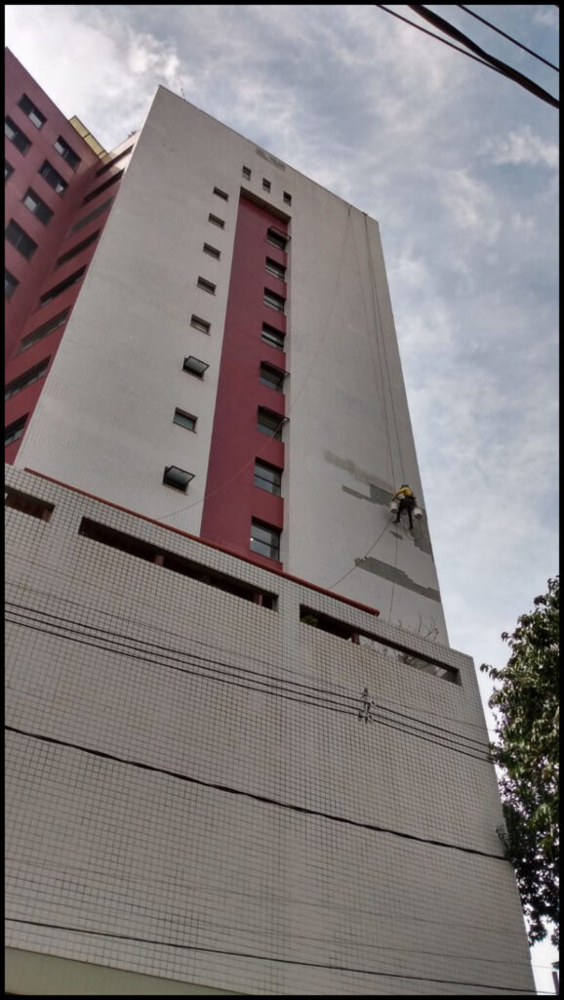

Som oco
Áreas que respondem diferente na inspeção podem indicar perda de aderência.

Reposição de pastilhas em fachadas
Vistoria, remoção e reposição de peças comprometidas com equipe preparada para trabalhar em altura e cuidar da rotina do condomínio.
Áreas que respondem diferente na inspeção podem indicar perda de aderência.
Pastilhas deslocadas ou ausentes deixam a base exposta e exigem avaliação.
Aberturas no revestimento favorecem a entrada de água e ampliam o desgaste.
Diferenças de alinhamento, cor e rejunte comprometem o acabamento da fachada.
A reposição de pastilhas em fachadas exige conhecimento da base, preparação adequada e cuidado com cada etapa. Uma aplicação apressada pode antecipar o desgaste e deixar o reparo evidente.
A Vertical Chão atende condomínios e edifícios residenciais e comerciais com acesso por corda. A equipe alcança áreas difíceis, organiza a intervenção e executa o reparo com foco em segurança, aderência e acabamento.
Antes de repor as peças, é preciso avaliar o estado do revestimento e da base. Assim, o orçamento considera o que a fachada realmente precisa.
Solicitar uma avaliaçãoComo trabalhamos
O escopo final depende da avaliação no local. Esta sequência mostra como organizamos uma intervenção de reposição de pastilhas.
A equipe avalia acesso, áreas afetadas e condições aparentes do revestimento.
As peças comprometidas são retiradas com cuidado para delimitar o reparo.
A superfície recebe as correções necessárias antes da aplicação das novas peças.
As pastilhas são assentadas buscando continuidade visual e acabamento consistente.
O serviço é conferido e apresentado ao responsável pelo edifício.
Trabalho real
As imagens abaixo são de serviços da Vertical Chão. Elas mostram remoção de áreas comprometidas, aplicação de pastilhas e trabalho em fachadas de edifícios.


Relatos publicados na página original da Vertical Chão, apresentados uma única vez e com edição apenas para facilitar a leitura.
“A equipe é completa, usa todos os equipamentos de segurança e conhece obra e acabamento em estruturas horizontais e, principalmente, verticais.”
Luiz AugustoSíndico, Condomínio Edifício Jardim Suíço
“A Vertical Chão trabalha com segurança, usa as proteções necessárias e entrega um serviço de ótima qualidade. Para obra ou manutenção do condomínio, vale a pena.”
Idalécio GomesAdministrador, Centro Empresarial Raja Gabaglia 1001
“Após onze orçamentos, escolhemos a Vertical Chão. A obra foi mantida limpa e organizada, entregue no prazo e sem transtornos para o condomínio.”
Valéria MoreiraSíndica, Edifício Parque dos Pioneiros
Orçamento de reposição de pastilhas
Preencha os dados principais. Ao enviar, abrimos o WhatsApp com uma mensagem organizada para o atendimento comercial. Nenhum dado fica armazenado neste site.